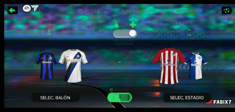

Download FIFA 2024 Mod FIFA 14 APK+OBB+DATA Offline
Experience FIFA 2024 Mod FIFA 14 Apk Obb Data, also known as EA Sports FC 24, offering recent player transfers, enhanced graphics, a revamped user interface, updated stadiums, and new footballs.
With FIFA 2024 Mod 14 FC 24 Apk Obb by EA Sports, you can embark on your virtual football management journey, construct your team, progress through various league stages, and aim to claim the championship trophy by season's end.
YOU MIGHT LIKE:FIFA 16 MOD 24
Explore various modes, including daily matches where you select your preferred team or club to compete with. Engage in tournament mode, climb to the top of the rankings, and compete in the final match for tournament victory.
Refine your players skills using the training mode available in FIFA 2024 Mod FC 24 by EA Sports, ensuring you're always at the top of your game.
Career mode has received essential updates to rectify bugs from the previous version, ensuring a smoother gaming experience.

Player faces in FIFA 2024 Mod 14 EA Sports FC 24 Apk have undergone significant improvements, making them more visually appealing during in-game matches.
you might like:FTS SOCCER 2024
The control buttons operate seamlessly and responsively, eliminating any hiccups during gameplay, allowing you to dribble and manage your players effortlessly.
To unlock the full range of features in EA Sports FC 24 Mod FIFA 14 Mobile, ensure you download both the Apk, Obb, and Data files.
How To Install FIFA 2024 Mod FC 24 Mod Apk Obb Data
Please follow these steps carefully to install FIFA 24 or EA Sports FC 24 Apk, Obb, and Data files on Android 13. For detailed instructions, please read the download section below. Estimated time
required: 5 minutes.
Instructions for extracting EA Sports FC 24 Apk, Obb, and Data files are as follows:
-
Step One:
Using Installed ZArchiver App locate and click on Data FC 24 Mod rar or Zip file.
-
Step Two:
In the options menu that appears, select "Extract here" to extract the files into the same folder where you saved your downloads.
-
Step Three:
Now, patiently wait for the extraction process to reach 100%.
-
Step Four:
Find the extracted Data file, identified as com.ea.game.fifa14_row.
-
Step Five:
Long-press the extracted data file for FIFA 24 or FC 24, then select "Copy" from the options menu that appears.
-
Step Six:
Tap on the folder's title located at the top of the ZArchiver app interface. For example, if you're currently in the Downloads folder, click on "Downloads."
-
Step Seven:
From drop down menu that appears click “Device Storage”.
-
Step Eight:
Click “Android folder” and proceed to the next steps.
-
Step Nine:
Click Data Folder and continue to the next steps.
-
Step Ten:
Click “Extract Icon” which on the right hand side of your phone.
-
Step Eleven:
Wait for the data files to finish copying into the data folders, ensuring it reaches 100%. This procedure is compatible with Android 12 devices.
-
Step Twelve:
To extract the Obb file for FIFA 24 Mod 14 or EA FC 24 Mod 14, simply click on the file. An Options Menu will appear; select "Extract" and continue.
-
Step thirteen:
Again Click at the title of the folder you are in at the top of ZArchiver app interface.
-
Step fourteen:
From drop down menu that appears, Click Device Storage
-
Step fifteen:
Click Android folder
-
Step Sixteen:
Click Obb Folder.
-
Step seventeen:
Click Extract Icon on the down right hand of your phone and the obb file will be extracted completely upon reaching 100%.
-
Step Eighteen:
Finally Install the FIFA 24 Mod 14 Apk.